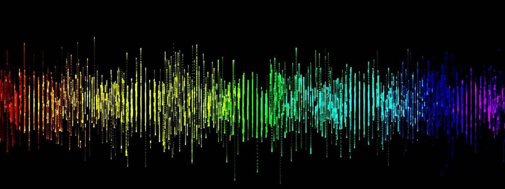
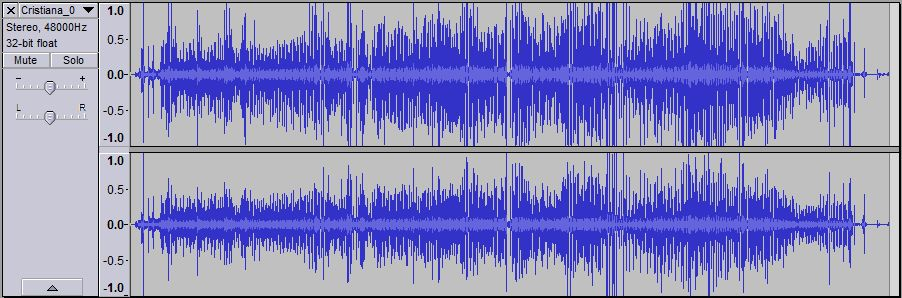
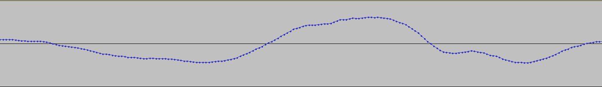
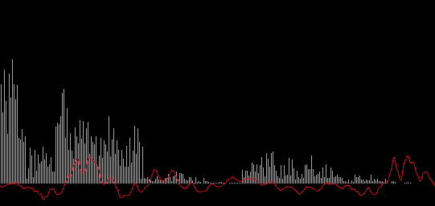
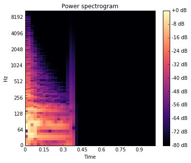
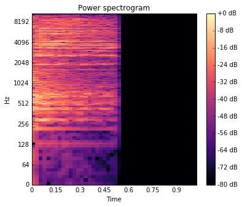
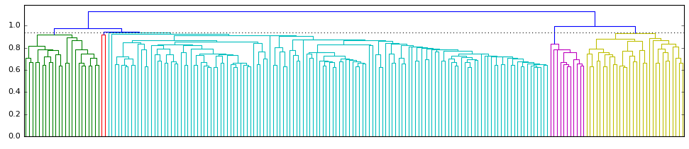
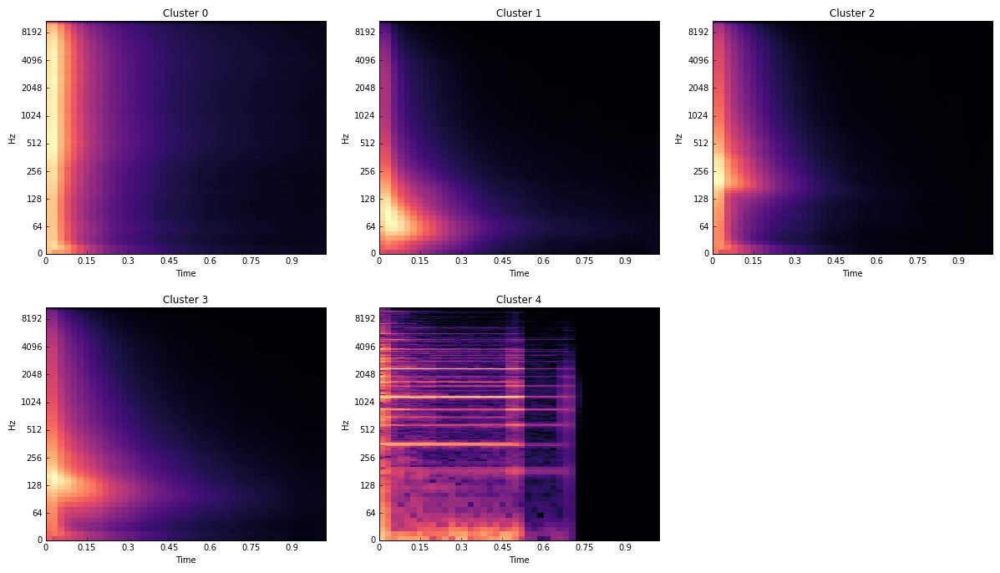

Análisis Inteligente de Datos
Trabajo Final

Organización automática de bancos de sonido digital
Leandro Garber
Lic. en Artes Electrónicas con orientación en sonido
Descripción del problema
- Banco de sonidos sin categorizar
- Agrupamiento en base a cualidades sonoras
- Instrumento musical digital, sampler inteligente, interface musical alternativa
- Orientado a músicos tradicionales y de música experimental
- Otros campos: bioacústica, antropología, lingüística
Resumen del proceso
Técnicas utilizadas
- Análisis de componentes principales (PCA)
- Agrupamiento jerárquico
- Escalamiento multidimensional (MDS)
- Test de normalidad univariado (Shapiro)
- Test de homocedasticidad multivariado (M de Box)
- Scatterplot
Descripción del conjunto de datos
- 2128 archivos de audio
-
68 máquinas de ritmos clásicas de los 80's
- Bombo
- Redoblante
- Platillo
- Provenientes de distintas fuentes
- ¿Cómo obtener una matriz de datos para poder aplicar las técnicas?
Representación del audio en el dominio del tiempo

Acercamiento

Preprocesamiento
-
Conversión de todos los archivos a un formato común:
- Formato: WAV
- Cantidad de canales: 1
- Frecuencia de muestreo: 22050Hz
- Profundidad de bits: 16
-
Short Time Fourier Transformation (STFT)
-
1025 frecuencias
-
44 ventanas ( ~23ms cada una )
Fast Fourier Transformation (FFT)
Representación del audio en el dominio de la frecuencia

Short Time Fourier Transformation (STFT)


Características de la base
-
45100 variables
-
2183 filas
-
Rango: [-3.4E+38 : +3.4E+38]
-
Test de normalidad univariado de Shapiro arroja que ninguna de las variables es normal
Análisis de componentes principales (PCA)
-
800 componentes
-
Explica 99% de la variabilidad
Agrupamiento jerárquico
-
Definición de distancia: Similitud coseno
-
Criterio de enlace: promedio
-
Factor cofonético: 0.78
Dendograma
-
Punto de corte: 0.94
-
Grupos:
-
1 grupo mayoritario, 1048 registros
-
3 grupos parejos, 367, 362 y 349 registros
-
1 grupo minoritario, 2 registros

Espectrogramas medios por agrupamiento

Escalamiento multidimensional (MDS)
Software
-
Jupyter Notebook
-
Python: sklearn, scipy, numpy, pandas, librosa y matplotlib
-
Javascript: d3.js
Discusión y conclusiones
-
Grupos demasiado generales
-
Bajar el umbral establecido en el dendograma sólo genera muchos grupos de 1 solo individuo
-
Utilizar más variables que expresen otras características sonoras
-
Audio crudo + STFT
-
Métricas de envolvente, de altura, etc.
-
Comparar con otros algoritmos de clustering
-
PAM
-
SOM
-
DBScan
-
Clustering difuso
Referencias bibliográficas
-
Burka, Zak, "Perceptual audio classification using principal component analysis"
(2010). Thesis. Rochester Institute of Technology.
-
Lukáš Lalinský - How does Chromaprint work?
-
Yan Ke, Derek Hoiem, Rahul Sukthankar. Computer Vision for Music
Identification, Proceedings of Computer Vision and Pattern Recognition, 2005.
-
Google AI Experiments - The infinite drum machine